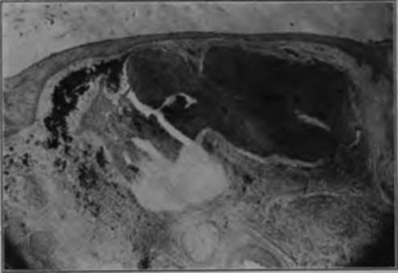

Pigmented Moles
Description
This section is from the book "Skin Cancer", by Henry H. Hazen, A.B., M.D.. Also available from Amazon: Skin Cancer.
Pigmented Moles
For many years it has been well known by dermatologists, and to a somewhat lesser extent by surgeons, that the most virulent form of skin cancer (or sarcoma)-namely, the melanotic-always has its origin in either congenital or acquired pigmented moles. In 1903, Bloodgood,* and a few months later Keen,* two eminent American surgeons, showed how frequent and fatal these growths were. They further stated that not only all acquired moles, but all congenital moles, that began to grow, that showed any signs of ulceration, or that were subject to continuous irritation, should be removed as a prophylactic measure. Unfortunately, although this point is now conceded by all surgeons and dermatologists, neither the profession at large nor the general public is as yet educated up to it, but there are many signs of an awakening.
Neither the large raised, hairy moles, nor the small hairy ones, are apt to develop into melanotic growths, and only rarely do they become the seat of basal-celled cancers. The almost flat, deeply pigmented, common moles are the dangerous ones.
Histology
Histologically, these benign growths consist of more or less epithelial hypertrophy; beneath the rete there is a thin layer of normal corium, and then come the characteristic large nevoid cells, closely grouped together, as shown in Fig. 1. Some of the pigment is in these cells, but may also occur in the neighboring corium. There is considerable discussion as to whether these cells are of mesoblas-tic or epithelial origin, the weight of evidence seeming to favor the latter view. This question will be fully discussed in the chapter devoted to the malignant melanotic growths.
*Bowen: Jour. Cutan. Dis., 1912, xxix, 241.
*Bloodgood: Progressive Medicine, Dec, 1903, 149.
*Keen: Jour. Amer. Med. Assn., 1903.
Fig. 1.-in this photomicrograph of an ordinary pigmented mole may be seen the masses of nevoid cells containing pigment, and also pigment scattered throughout the neighboring corium. There is a layer of normal corium between the rete and the underlying masses of cells. (Author's collection).
Malignant Degeneration
The first clinical evidences of malignancy are often very slight; there may be a slight growth or a slight ulceration, possibly followed by the development of a tumor (Fig. 2), but the condition to be dreaded is the wonderfully rapid formation of metastases, either in the skin or in the glands or viscera. Metastasis may take place before any change is noted in the mole. Bloodgood states that the first pathological evidence of malignancy is to be found in the invasion of the corium just beneath the rete, and above the nevus, by nevoid cells.
Fig. 2.-The patient shown in this illustration had a common mole of the which he irritated while shaving. It was removed under local anesthesia, and promptly recurred with the result shown. There were many other growths both in the skin and glands. (Heidlngsfeld's collection).
Treatment
When it is deemed advisable to remove a mole, it may be done by any one of several methods. Engman* and Bevan* state that the actual cautery should always be used, believing that the use of the knife or of caustics favors the dissemination of cancer cells. Bloodgood,* however, advocates the knife, stating that dissemination is always so rapid that the above criticisms are not pertinent. Personally, the author believes that when it is suspected that malignant change has taken place, or is about to take place, the cautery should be used, but that in removing a mole for prophylactic purposes the electric needle will suffice. Bloodgood states that he has excised a number of moles that have been treated with carbon dioxid snow by capable dermatologists, and that all of the nevoid cells were not destroyed, and hence he cannot recommend this method.
Continue to:
Tags
bookdome.com, books, online, free, old, antique, new, read, browse, download